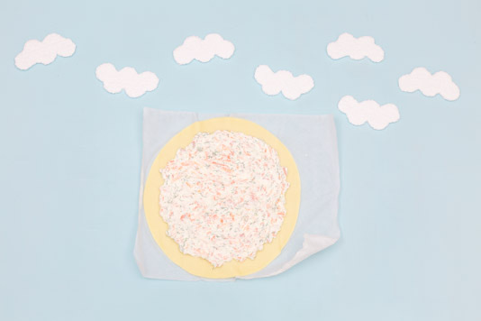
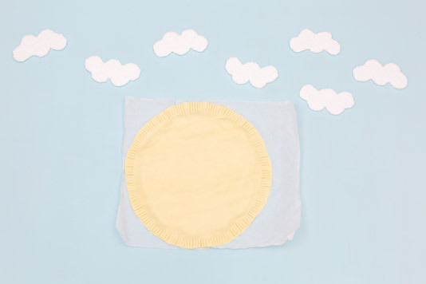
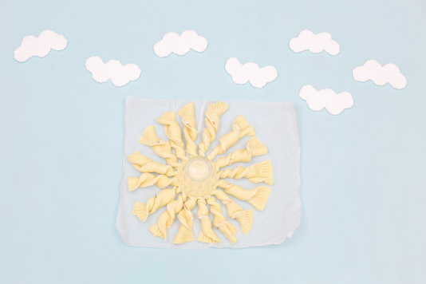
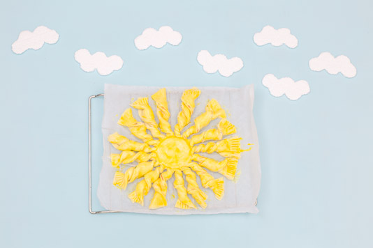

Tarte soleil saumon aneth

Aujourd’hui je vous retrouve avec une toute nouvelle recette!! Et oui comme vous pouvez le constater, j’ai cédé à la tentation et j’ai fait une belle tarte soleil saumon aneth et fromage frais!
Je ne sais pas quel temps il a fait chez vous ces derniers jours mais ici c’était pluie, orages, pluie, pluie, légère éclaircie et pluie! Bref autant vous dire qu’en avril moi je ne me découvre pas d’un fil ;-)! Malgré le mauvais temps qui persiste dehors, j’essaye tant bien que mal de faire venir le soleil à nous et ma méthode pour ça c’est de ramener quelques éclaircies directement dans nos assiettes ☼! J’avais goûté il y a peu une tarte soleil préparée avec de la pâte feuilletée et je n’avais vraiment pas aimé du tout! Je trouvais ça très sec et sans grand intérêt et j’avais du mal à comprendre tout l’engouement qu’il peut exister autour de ces tartes finalement très basiques. En y repensant quelques jours plus tard, je me suis dit qu’il serait pas mal de tenter l’expérience mais avec de la pâte à pizza. Avec mon chéri, nous nous sommes donc mis d’accord sur la garniture (partie la plus longue de la recette^^) et nous avons choisi de la faire au saumon, à l’aneth et au fromage frais! Et bien vous savez quoi? C’était un régal!!! La pâte n’est pas devenue toute sèche, on sentait bien la garniture à l’intérieur et pour un apéro c’est une idée vraiment sympa! Ce que je peux vous conseiller c’est d’en faire plusieurs en versions minis c’est encore meilleur et cela permet aussi de faire varier les plaisir! La prochaine fois j’ai envie de tester une tarte soleil sucée et je vous dirais ce que j’en ai pensé :-)! En attendant, je vous laisse avec la recette de la tarte soleil saumon aneth avec en bonus une petite vidéo ci-dessous pour suivre toutes les étapes ;-)!
Ingrédients
- Pâte à pizza - 2
- Saumon fumé - 4 tranches
- Cream cheese (philadelphia, St-Môret..) - environ 250g
- Aneth - 1 bouquet
- Gousse d'ail - 1
- Jaune d'œuf - 1
Instructions
- Préchauffer le four à 180°
- Couper le saumon fumé en lamelles
- Ciseler l'aneth
- Dans un grand bol bien mélanger le cream cheese, le saumon, l'aneth et la gousse d'ail écrasée
- Dérouler une première pâte à pizza
- Verser votre mélange au centre et bien étaler en laissant 3 cm vide sur les bords de la pâte
- Recouvrir entièrement la première pâte à pizza par la seconde
- Sceller les bords à l'aide d'une fourchette
- Préchauffer votre four à 180°
- Mettre un grand verre au centre de votre pâte
- En partant de ce verre couper en 4 parts égales la tarte
- Couper à nouveau pour faire 8 parts égales
- Couper une dernière fois pour former 16 parts égales (ces parts vont former les" rayons du soleil")
- Prendre chaque rayon délicatement et le tourner dans le sens des aiguilles d'une montre pour lui faire faire 3 tours (environ) sur lui-même
- Faire la même manipulation délicatement sur l'ensemble des rayons
- Badigeonner la tarte à l'aide d'un pinceau de jaune d’œuf
- Enfourner la tarte du soleil 30 à 35 minutes (en surveillant bien elle doit être bien dorée)
- Laisser refroidir quelques minutes puis régalez-vous !!




Les tips de la communauté
Recette appréciée pour son originalité et son format ludique, magnifiée par la présentation vidéo en stop-motion. Les commentaires portent sur la beauté visuelle et la créativité de la présentation innovante.
Astuces
- La forme soleil peut être adaptée à différentes garnitures
Variantes suggérées
- Remplacer la garniture par pesto et olives pour une version végétarienne
- Alternative apéritif: version roulée surgelée puis trancher et cuire 15-20 min à 180°C
Ajustements signalés
- que j’en fasse a version !